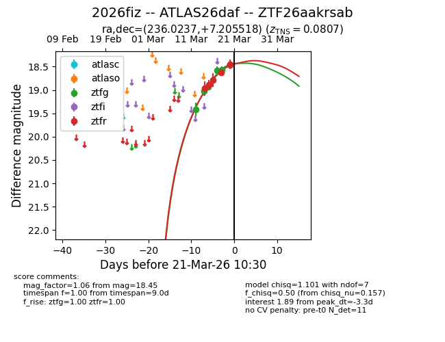
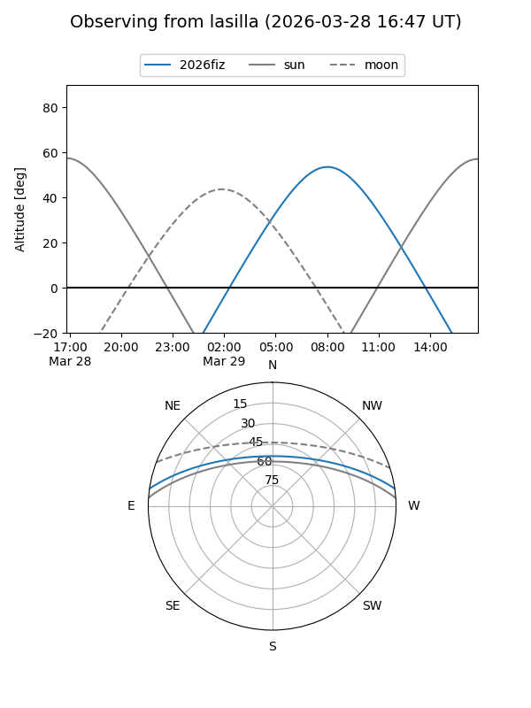
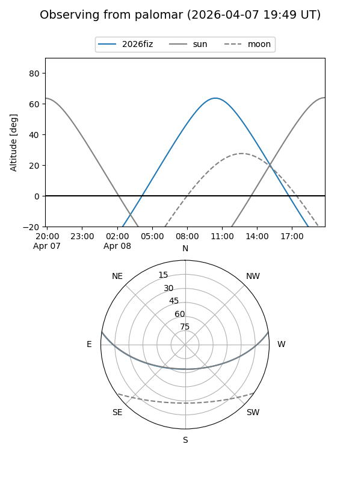
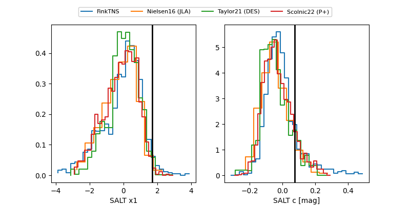

2026fiz
Target 2026fiz at 2026-03-21 10:32
Aliases and brokers:
FINK: link
Lasair: link
ALeRCE: link
TNS: link
YSE: link
alt names
ZTF26aakrsab (ztf,fink_ztf)
2026fiz (tns,yse)
ATLAS26daf (atlas)
Coordinates:
equatorial (ra, dec) = 236.0237,+7.20552
equatorial (HMS+DMS) = 15:44:05.69,+07:12:19.87
galactic (l, b) = (15.0988,+44.52502)
Flags:
confirmed ia
Photometry:
last ztfg=18.46, ztfr=18.45
6 ztfg, 5 ztfr detections
Lightcurve

Visibility


Additional plots
